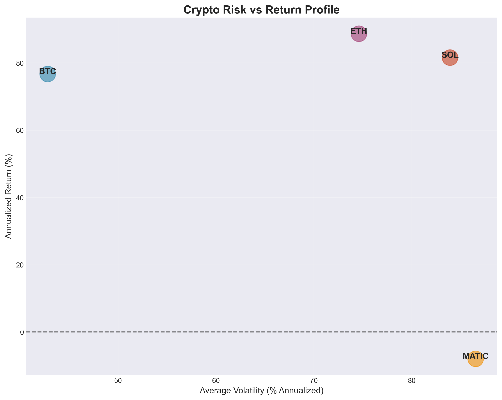

Data Visualization & Financial Analysis
Transforming complex market data into clear, actionable insights
Mathematics graduate with a passion for uncovering stories hidden in financial and market data. Currently pursuing a Computer Science degree while building data visualization projects that combine analytical rigor with clear visual storytelling.
My background in quantitative trading and crypto markets gives me a unique perspective on data analysis, allowing me to identify meaningful patterns and communicate complex insights to both technical and non-technical audiences.
Analyzed 2 years of FAANG stock performance to uncover correlation patterns and identify which tech giants move together. This analysis reveals surprising independence in some stocks while others show strong synchronized movements.
Data Source: Polygon.io API (2-year historical data)
Time Period: Last 730 days
Stocks Analyzed: AAPL, MSFT, GOOGL, META, NVDA
Analysis: Calculated daily returns and Pearson correlation coefficients to measure co-movement patterns
Tools: Python, pandas, matplotlib, Polygon.io API
# Calculate stock correlation matrix
import pandas as pd
# Load stock data
stock_data = pd.read_csv('stock_market_data.csv')
stock_data['date'] = pd.to_datetime(stock_data['date'])
# Calculate daily returns
stock_data['daily_return'] = stock_data.groupby('ticker')['close'].pct_change()
# Pivot for correlation analysis
pivot_returns = stock_data.pivot(index='date', columns='ticker', values='daily_return')
# Calculate correlation matrix
correlation_matrix = pivot_returns.corr()
print(correlation_matrix)Comprehensive risk-return analysis of major cryptocurrencies over 365 days. This project quantifies the volatility differences between established coins like Bitcoin and newer altcoins, helping investors understand the true risk-reward tradeoffs.

Data Source: CoinGecko API
Time Period: 365 days
Cryptocurrencies: BTC, ETH, SOL, MATIC
Metrics Calculated: 30-day rolling volatility, annualized returns, Sharpe ratios, risk-return profiles
Tools: Python, pandas, matplotlib, seaborn, CoinGecko API
# Calculate 30-day rolling volatility for cryptocurrencies
import pandas as pd
import numpy as np
# Load crypto data
crypto_data = pd.read_csv('crypto_prices.csv')
crypto_data['date'] = pd.to_datetime(crypto_data['date'])
# Calculate daily returns
crypto_data['daily_return'] = crypto_data.groupby('coin')['price'].pct_change()
# Calculate 30-day rolling volatility (annualized)
crypto_data['volatility_30d'] = (
crypto_data.groupby('coin')['daily_return']
.rolling(window=30)
.std() * np.sqrt(365) * 100
)
# Calculate Sharpe Ratio (risk-adjusted returns)
risk_free_rate = 0.04 # 4% annual
for coin in crypto_data['coin'].unique():
coin_data = crypto_data[crypto_data['coin'] == coin]
avg_return = coin_data['daily_return'].mean() * 365
volatility = coin_data['daily_return'].std() * np.sqrt(365)
sharpe_ratio = (avg_return - risk_free_rate) / volatility
print(f"{coin} Sharpe Ratio: {sharpe_ratio:.2f}")Analyzed social media buzz and sentiment scores for cryptocurrencies to identify which coins are generating the most discussion and positive/negative sentiment. Leverages my experience with social velocity trading strategies.

Data Sources: LunarCrush API, CoinGecko Trending API
Time Period: Last 30 days
Cryptocurrencies: BTC, ETH, SOL, DOGE, SHIB
Metrics: Sentiment scores (0-100), social volume, social dominance, trending rankings
Tools: Python, pandas, matplotlib, LunarCrush API
# Fetch and analyze social sentiment for cryptocurrencies
import requests
import pandas as pd
# LunarCrush API endpoint (requires API key)
api_key = 'YOUR_LUNARCRUSH_API_KEY'
base_url = 'https://api.lunarcrush.com/v2'
# Fetch social metrics for top coins
coins = ['BTC', 'ETH', 'SOL', 'DOGE', 'SHIB']
sentiment_data = []
for coin in coins:
params = {
'data': 'assets',
'symbol': coin,
'interval': 'day',
'key': api_key
}
response = requests.get(base_url, params=params)
data = response.json()
if 'data' in data and len(data['data']) > 0:
asset = data['data'][0]
sentiment_data.append({
'coin': coin,
'sentiment_score': asset.get('galaxy_score', 0),
'social_volume': asset.get('social_volume', 0),
'social_dominance': asset.get('social_dominance', 0),
'sentiment': asset.get('sentiment', 0)
})
# Convert to DataFrame
df_sentiment = pd.DataFrame(sentiment_data)
print(df_sentiment.sort_values('sentiment_score', ascending=False))Tracked Total Value Locked (TVL) trends across major DeFi protocols over 6 months to understand market share dynamics and protocol growth rates. Reveals which protocols are gaining traction and which are losing ground in the competitive DeFi landscape.
Data Source: Messari API
Time Period: 180 days
Protocols Analyzed: Uniswap, Aave, Compound, Curve, Lido
Metrics: Total Value Locked (TVL), 30-day growth rates, market share, correlation analysis
Tools: Python, pandas, matplotlib, seaborn, Messari API
# Track DeFi protocol TVL and calculate growth rates
import requests
import pandas as pd
# Messari API endpoint
base_url = 'https://data.messari.io/api/v1'
headers = {'x-messari-api-key': 'YOUR_API_KEY'}
# Protocols to track
protocols = ['uniswap', 'aave', 'compound', 'curve-dao-token', 'lido-dao']
tvl_data = []
for protocol in protocols:
# Fetch TVL timeseries (180 days)
endpoint = f'{base_url}/assets/{protocol}/metrics/defi.tvl/time-series'
params = {
'start': '2024-04-01',
'end': '2024-10-01',
'interval': '1d'
}
response = requests.get(endpoint, headers=headers, params=params)
data = response.json()
if 'data' in data:
df = pd.DataFrame(data['data']['values'], columns=['timestamp', 'tvl'])
df['protocol'] = protocol
df['date'] = pd.to_datetime(df['timestamp'], unit='ms')
tvl_data.append(df)
# Combine all data
df_tvl = pd.concat(tvl_data, ignore_index=True)
# Calculate 30-day growth rate
df_tvl['tvl_30d_ago'] = df_tvl.groupby('protocol')['tvl'].shift(30)
df_tvl['growth_30d'] = ((df_tvl['tvl'] - df_tvl['tvl_30d_ago']) /
df_tvl['tvl_30d_ago'] * 100)
print(df_tvl.groupby('protocol')['growth_30d'].last())Interested in data visualization, financial analysis, or collaborative projects? Let's connect!
Email: anthonygalindo922@gmail.com